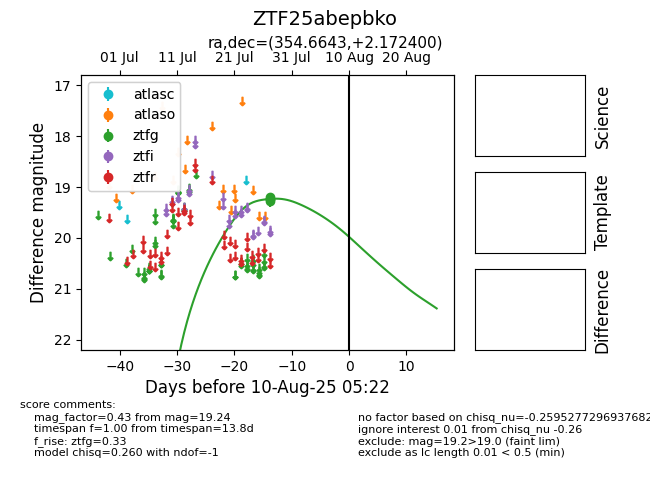

Target ZTF25abepbko at 2025-08-10 05:22, see:
FINK: fink-portal.org/ZTF25abepbko
Lasair: lasair-ztf.lsst.ac.uk/objects/ZTF25abepbko
ALeRCE: alerce.online/object/ZTF25abepbko
alt names
ZTF25abepbko (ztf,fink)
coordinates:
equatorial (ra, dec) = (354.6643,+2.17240)
galactic (l, b) = (89.1605,-55.85245)
photometry
last ztfg=19.24
4 ztfg detections
